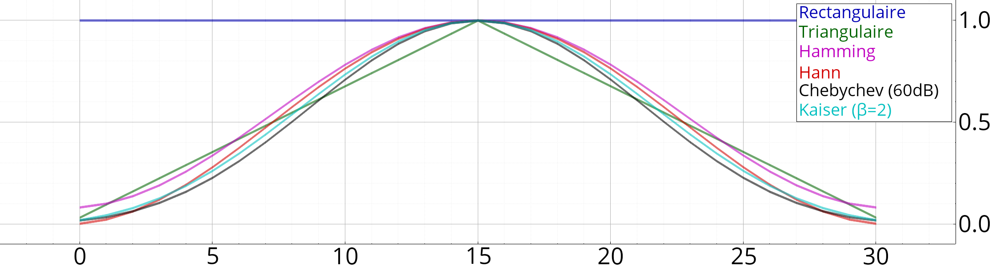
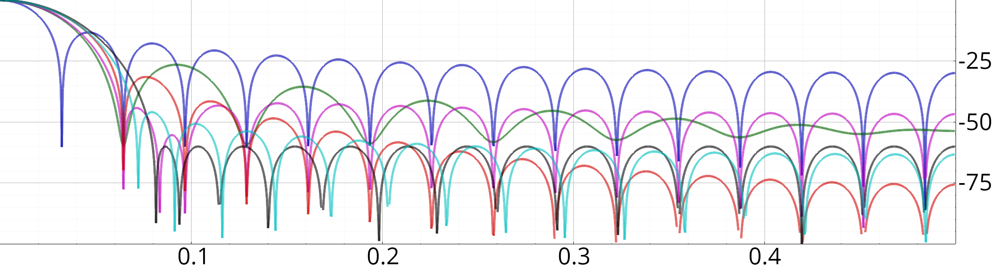

Fenêtres
#include "tsd/filtrage.hpp"
Les fenêtres symétriques seront adaptées pour des conceptions RIF, et pour l'analyse spectrale, il vaudra mieux utiliser des fenêtres périodiques (paramètre "symetrique" = false).
Voici quelques exemples de fenêtres (toutes avec 31 coefficients), et leur réponse fréquentielle :

Domaine temporel

Domaine fréquentiel
Fonctions
Vecf fenêtre(cstring type, entier n, bouléen symetrique=oui)
Création d'une fenêtre sans paramètre (rectangulaire, Hann, Hamming, triangulaire ou Blackman)
Vecf fenêtre_chebychev(entier n, float atten_db, bouléen symetrique=oui)
Création d'une fenêtre de Chebychev.
Vecf fenêtre_slepian(entier N, float B)
Création d'une fenêtre de Slepian.
tuple<float, entier> kaiser_param(float atten_db, float δf)
Calcul du paramètre \(\beta\) et de l'ordre d'un filtre de Kaiser.
Vecf fenêtre_kaiser(float atten_db, float δf, bouléen symetrique=oui)
Création d'une fenêtre de Kaiser.
Vecf fenêtre_kaiser1(entier n, float β, bouléen symetrique=oui)
Création d'une fenêtre de Kaiser (d'après paramètre de forme \(\beta\)).